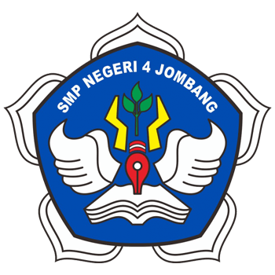
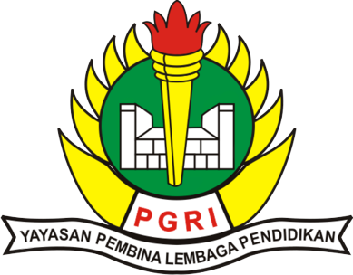
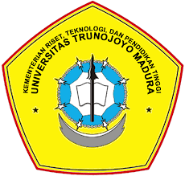

Riwayat Pendidikan

SDN Tambakrejo 1 Jombang
2008 - 2014Saya memulai pendidikan formal pada sekolah dasar negeri 1 Tambakrejo Jombang selama 6 tahun

SMPN 4 Jombang
2014 - 2017Saya melanjutkan pendidikan formal di Sekolah Menengah Pertama Negeri 4 Jombang selama 3 tahun

SMA PGRI 2 Jombang
2014 - 2020Saya melanjutkan pendidikan formal di Sekolah Menengah Atas PGRI 2 Jombang selama 3 tahun

Universitas Trunojoyo Madura
2020 - SekarangSaya melanjutkan pendidikan di Universitas Trunojoyo Madura saya masuk ke fakultas Teknik,Program Studi Teknik Informatika